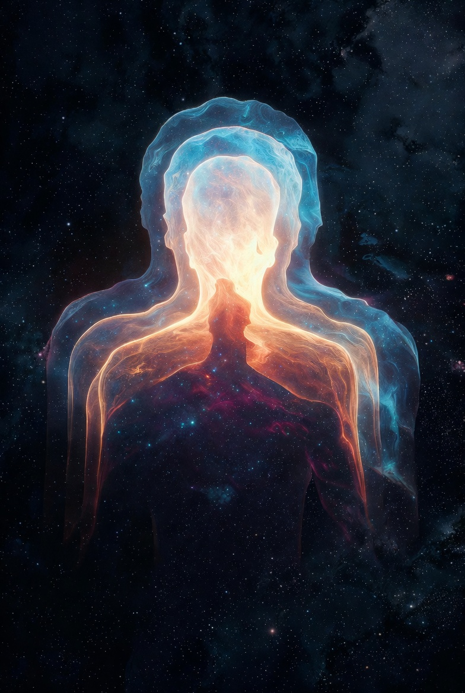

The Five Sheaths of the Self — Your True Nature Beyond the Body
Most people identify themselves with their body, thoughts, or emotions. But according to the ancient Upanishads, these are only layers — like clothes covering your true Self.
The Panchakosha (Five Sheaths) teaching from the Taittiriya Upanishad reveals the five layers that cover your true nature (Atman), and how to go beyond them to realize your infinite, blissful Self.

The Five Sheaths (Panchakosha) — From Gross Body to Pure Bliss
The Body Made of Food
This is your physical body — made of food, sustained by food, and eventually returning to food (earth). It is the outermost layer.
Key Insight: You are not the body. The body is your temporary vehicle.
The Breath & Life Energy
This is the layer of vital energy (Prana) that animates your body. It includes breath, circulation, digestion, and all life functions.
Key Insight: You are not your breath or energy. These are tools of the Self.
The Mind & Emotions
This is your mind — thoughts, emotions, desires, memories, and imagination. Most people live their entire life identified with this layer.
Key Insight: You are not your thoughts. You are the witness of thoughts.
The Intellect & Discrimination
This is the layer of higher intellect, discrimination (Viveka), and inner wisdom. It helps you distinguish between real and unreal, permanent and temporary.
Key Insight: Even the intellect is a tool. The Self is beyond all knowing.
The Sheath of Pure Bliss
This is the innermost layer — a state of deep peace, joy, and bliss experienced in deep meditation and dreamless sleep. It is the closest covering to your true Self (Atman).
Key Insight: Even bliss is a sheath. Your true nature is beyond bliss — it is Sat-Chit-Ananda (Existence-Consciousness-Bliss).
Observe the Layers: In meditation, notice which sheath you are currently identified with (body, breath, thoughts, intellect, or bliss).
Practice "Neti Neti": Keep asking "Am I this?" for each layer. "I am not the body... I am not the mind..." until you rest in pure awareness.
Live from the Center: Once you experience the witness consciousness, make decisions from that deeper place instead of from fear or desire.
This sheath is literally made of the food you eat. The Taittiriya Upanishad says: "From food are born all creatures... They live by food, and when they die, they return to food."
This includes not just your physical body, but also the vital energies, mind, intellect, and the subtlest layer of bliss (anandamaya). The sages taught that realizing the Self beyond these five sheaths brings lasting freedom.
This is the vital life force (Prana) that flows through 72,000 nadis (energy channels) in your body. It includes the five main Pranas: Prana (incoming), Apana (outgoing), Samana (balancing), Udana (upward), and Vyana (circulating).
This sheath is why breathwork (Pranayama) is so powerful — it directly works with this layer. When Prana is balanced, the body heals naturally and the mind becomes calm.
This is the most active sheath for most people. It includes your thoughts, emotions, desires, fears, memories, and imagination. The mind is constantly creating stories and reacting to them.
Modern psychology calls this the "default mode network" — the part of the brain that is active when you're not focused on a task. Meditation practices directly target this sheath by teaching you to observe thoughts instead of being controlled by them.
This is the sheath of higher intelligence and discrimination. It is what allows you to question "Is this real?" or "Is this permanent?" It is the voice of inner wisdom that knows right from wrong, real from unreal.
This sheath is highly developed in philosophers, scientists, and spiritual seekers. It is the bridge between the mind and the Self. When this sheath is purified, intuition becomes very strong.
This is the subtlest sheath — a state of deep peace and joy experienced in deep meditation, dreamless sleep (Sushupti), and moments of profound love or beauty. It is not excitement or pleasure, but a quiet, expansive bliss.
However, even this bliss is still a covering. The true Self (Atman) is beyond even bliss. It is Sat-Chit-Ananda — Existence-Consciousness-Bliss in its pure form, without any sheath.
Here is a powerful daily practice to work with all five sheaths:
Sit comfortably. Feel your body from head to toe. Notice sensations, tension, temperature. Say internally: "I am not this body. I am the awareness of this body."
Shift attention to your breath. Feel the subtle energy flowing. Say: "I am not this breath. I am the awareness of this breath."
Watch your thoughts come and go like clouds in the sky. Do not judge them. Say: "I am not these thoughts. I am the witness of these thoughts."
Ask deeply: "Who am I really?" Stay in the silence between thoughts. Feel the presence of pure knowing.
Allow yourself to rest in the natural peace and joy that arises when identification with all layers drops. This is your true nature.
You are not the five sheaths.
You are the light that illuminates them all.
Tat Tvam Asi — Thou Art That.